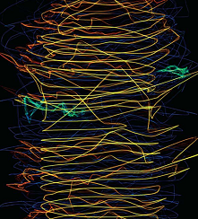
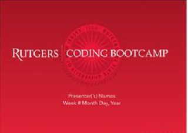

-
Paul Jin
Web Developer
A highly and intensively trained web developer with 6 months experience in a variety of exciting projects at the Rutgers coding bootcamp. A junior level web developer but head and rational approach to problem solving combined with a passion for innovative and fresh ideas has led to a portfolio of impressive website solutions. A strong communicator both in English and Korean with the ability to convey ideas clearly with an emphasis on client satisfaction.
-

Experience
2006-2014Regional Operations Manager @ David & Young - As an operation manager in fashion accessory industry, my skills and experiences include: goal setting (Sales Projection), development of new business and products for both new business and up sells on existing business, trade show management. New product souring in China or through a trading Company for manufacturing and ordering accessories in fashion accessories, specifications, forecasting and predicting up and coming trends etc.
-
Education
 1993-1997TCI Institute, NYC - Graduated and awarded an Associate Degree in Electronic Engineering.
2006Rutgers Coding BootCamp - Graduated and awarded web developer certificate.